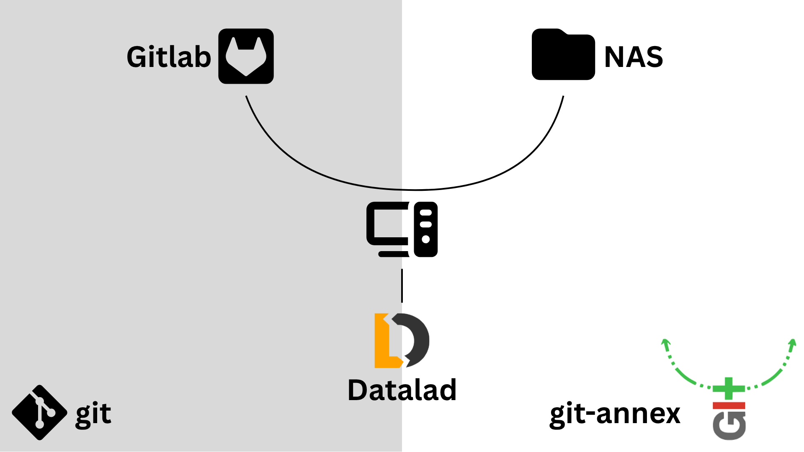

{kind=link}

The Gitlab + NAS setup setup where git is used for version control and metadata storage on GitLab, ang git-annex is used for data management on NAS storage. A virtual machine is used to manage seemless interaction between all components.🔗
Gitlab + NAS setup🔗
For this setup, we will use the University of Geneva’s NAS storage service to store data and the University of Geneva’s GitLab instance for version control, metadata storage, and collaboration. This setup allows you to manage your data and projects effectively while leveraging the capabilities of both NAS and GitLab.
Note
This project setup may seems complex at first, but it has been designed the reduce the technical complexity for the end user (researcher). Once the project is set up, a single clone command could be used by all users to access the project, without the need to worry about the operating system, path logic, siblings configuration, or publish dependencies.
Prerequisites🔗
[ ] Install uv
[ ] Create SSH keys
[ ] Setup NAS
[ ] Setup GitLab
Project setup🔗
NAS storage🔗
For this setup, we will use the University of Geneva’s NAS storage service to store data. Sone of the advantages of using NAS storage include: - High storage capacity - On demand storage expansion - Fast data access - Automatic data backup and redundancy
To use the NAS storage, you can use an existing storage location or create a new one. You can ask for a new storage location by opening a ticket on the unige-digitalworkspace page: NASac - Storage space for research data. At the time of writing, the cost of NAS storage is 75 CHF per TB per year, with the first 1TB being free. Some faculties may contribute to the cost of storage.
The following parameters related to the NAS storage will be needed for the setup:
[NAS_URL]: the URL of the NAS storage.
[NAS_URL]
//nasac-m2.unige.ch/nas-datalad
[ISIS_ID]: your ISIS ID, which is used for authentication and access control of UNIGE services.
[ISIS_ID]
vm.unige.ch
[ISIS_PASSWORD]: your ISIS password, which is used for authentication and access control of UNIGE services.
[ISIS_PASSWORD]
an ISIS very strong password
Remote machine🔗
For this setup, we will use a remote machine to manage interaction with NAS. This can be a VM or a physical machine that has access to the NAS storage. The remote machine will act as an intermediary between your local machine and the NAS, allowing you to manage your data and projects effectively. For maximum compatibility, we recommend using a Linux-based remote machine, as it provides better support for the tools and workflows we will be using.
VM setup🔗
If you choose to use a VM, you can request one from the University of Geneva’s IT services by opening a ticket on the unige-digitalworkspace page. Infrastructure - Hosting as a Service : Submit a request > IaaS - virtual server hosting (Linux, Windows) > Create . We recommend to select a Linux-based operating system for the VM, such as Ubuntu or CentOS. The cost of a VM depends on the resources allocated to it, such as CPU, RAM, and storage. The smallest VM configuration (1 vCPU, 1 GB RAM, 50 GB storage) should be sufficient for most use cases and costs around 37 CHF / year.
The following parameters related to the VM will be needed for the setup:
the URL / IP address of the VM, which is used to connect to the VM remotely:
[VM_URL]
vm.unige.ch
the username for the VM, which is used for authentication when connecting to the VM remotely:
[VM_USERNAME]
victor
the password for the VM, which is used for authentication when connecting to the VM remotely:
[VM_PASSWORD]
a VM very strong password
Mounting NAS on the remote machine.🔗
Instal required packages for mounting NAS on the remote machine:
sudo apt install cifs-utils psmisc
Create a ~/credentials file on the remote machine with the following content:
username=[ISIS_ID]
password=[ISIS_PASSWORD]
domain=ISIS
To make sure that the credentials file is secure, you can set the permissions of the file to be readable only by the root user:
chmod 600 ~/credentials
sudo chown root:root credentials
The following parameters related to the NAS storage will be needed for the setup:
[DESTINATION_PATH]: the path where you want to mount the NAS storage on the remote machine.
[DESTINATION_PATH]
/mnt/nas-datalad
Then mount the NAS storage on the remote machine using the following command:
sudo mount -t cifs -o credentials=~/credentials,uid=$(id -u),gid=$(id -g),file_mode=0664,dir_mode=0775 [NAS_URL] [DESTINATION_PATH]
sudo mount -t cifs -o credentials=~/credentials,uid=$(id -u),gid=$(id -g),file_mode=0664,dir_mode=0775 //nasac-m2.unige.ch/nas-datalad /mnt/nas-datalad
[Optional] Mounting NAS on the remote machine automatically after reboot.
To mount the NAS automatically after reboot, add an entry to /etc/fstab:
[NAS_URL] [DESTINATION_PATH] cifs credentials=[CREDENTIALS_PATH],uid=[VM_UID],gid=[VM_GID],file_mode=0664,dir_mode=0775,nofail,x-systemd.automount 0 0
//nasac-m2.unige.ch/nas-datalad /mnt/nas-datalad cifs credentials=/home/victor/credentials,uid=1000,gid=1000,file_mode=0664,dir_mode=0775,nofail,x-systemd.automount 0 0
You can append this entry to /etc/fstab with:
echo "//[NAS_URL] [DESTINATION_PATH] cifs credentials=[CREDENTIALS_PATH],uid=[VM_UID],gid=[VM_GID],file_mode=0664,dir_mode=0775,nofail,x-systemd.automount 0 0" | sudo tee -a /etc/fstab
echo "//nasac-m2.unige.ch/nas-datalad /mnt/nas-datalad cifs credentials=/home/victor/credentials,uid=1000,gid=1000,file_mode=0664,dir_mode=0775,nofail,x-systemd.automount 0 0" | sudo tee -a /etc/fstab
Then validate the entry without rebooting:
sudo mount -a
Gitlab setup🔗
Datalad setup🔗
datalad create -c text2git [PROJECT_NAME]
datalad create -c text2git project_datalad
Add NAS sibling🔗
datalad -l create-sibling-ria ria+ssh://[VM_USERNAME]@[VM_URL]/[DESTINATION_PATH] -s RIA --new-store-ok
datalad -l create-sibling-ria ria+ssh://victor@vm.unige.ch:/mnt/nas-datalad -s RIA --new-store-ok
Tip
Given that GitLab will be used for version control and metadata storage, the --storage-sibling=only flag could be used.
Since backups of the NAS storage are automatically created and the storage needed for version control history is minimal, we recommend to not use this flag to ensure that the version control history synced to the data is also backed up.
Add Gitlab sibling🔗
datalad create-sibling-gitlab --access ssh -s origin --project [GITLAB_GROUP]/[PROJECT_NAME] --site [GITLAB_SITE] --layout flat
datalad create-sibling-gitlab --access ssh -s origin --project gitlab-group/my_datalad_project --site unige --layout flat
Tip
The -s origin flag specifies the name of the sibling.
When users clone the repository, datalad will always set up the remote named to origin (whatever the name used during project creation). We recommend to use the name origin during project configuration to ensure consistency.
Add publish dependency🔗
To ensure that the version control history is always synced to the data, we will set up a publish dependency between the GitLab sibling and the NAS sibling. This means that when you publish to GitLab, the data will also be published to the NAS storage, without the need to publish to the NAS sibling separately.
datalad siblings configure -s origin --publish-depends RIA
Project use🔗
Access control🔗
Gitlab🔗
The users must have accees to the GitLab repository. You can add new memebers to the GitLab project by going to the project page on GitLab, clicking on “Settings” > “Members”, and then adding the user’s GitLab username or email address.
https://[GITLAB_URL]/[GITLAB_GROUP]/[PROJECT_NAME]/project_members
VM🔗
The user must also have access to the remote machine. Adding the user’s public ssh key to the ~/.ssh/authorized_keys file on the remote machine will grant them access to the remote machine and remote storage.
Clone🔗
datalad install git@[GITLAB_URL]:[GITLAB_GROUP]/[PROJECT_NAME].git
datalad install git@gitlab.unige.ch:gitlab-group/my_datalad_project.git
Limitations🔗
There are some limitations to this setup that users should be aware of:
ssh keys: users need to have their ssh keys added to the VM to be able to access the NAS storage. This might lead to some administrative overhead, especially for projects with many users or users using multiple machines ( i.e. HPC). This issue might be mitigated in the future by using Active Directory groups / ISIS ssh-key system to manage access to the
VM